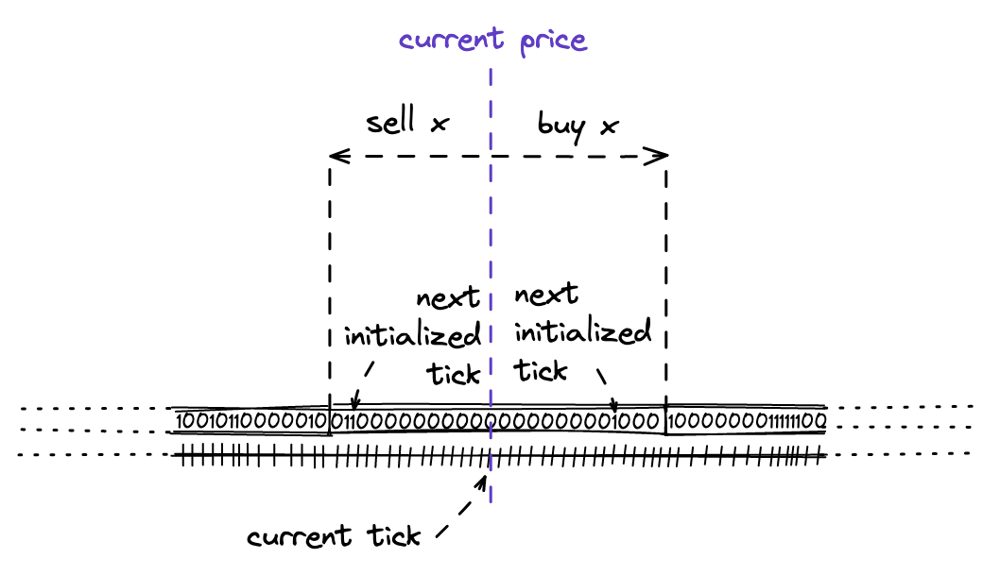

Tick Bitmap Index
As the first step towards dynamic swaps, we need to implement an index of ticks. In the previous milestone, we used to calculate the target tick when making a swap:
function swap(address recipient, bytes calldata data)
public
returns (int256 amount0, int256 amount1)
{
int24 nextTick = 85184;
...
}
When there’s liquidity provided in different price ranges, we cannot simply calculate the target tick. We need to find it. Thus, we need to index all ticks that have liquidity and then use the index to find ticks to “inject” enough liquidity for a swap. In this step, we’re going to implement such an index.
Bitmap
Bitmap is a popular technique of indexing data in a compact way. A bitmap is simply a number represented in the binary system, e.g. 31337 is 111101001101001. We can look at it as an array of zeros and ones, with each digit having an index. We then say that 0 means a flag is not set and 1 means it’s set. So what we get is a very compact array of indexed flags: each byte can fit 8 flags. In Solidity, we can have integers up to 256 bits, which means one uint256 can hold 256 flags.
Uniswap V3 uses this technique to store the information about initialized ticks, that is ticks with some liquidity. When a flag is set (1), the tick has liquidity; when a flag is not set (0), the tick is not initialized. Let’s look at the implementation.
TickBitmap Contract
In the pool contract, the tick index is stored in a state variable:
contract UniswapV3Pool {
using TickBitmap for mapping(int16 => uint256);
mapping(int16 => uint256) public tickBitmap;
...
}
This is mapping where keys are int16’s and values are words (uint256). Imagine an infinite continuous array of ones and zeros:

Each element in this array corresponds to a tick. To navigate in this array, we break it into words: sub-arrays of length 256 bits. To find the tick’s position in this array, we do:
function position(int24 tick) private pure returns (int16 wordPos, uint8 bitPos) {
wordPos = int16(tick >> 8);
bitPos = uint8(uint24(tick % 256));
}
That is: we find its word position and then its bit in this word. >> 8 is identical to integer division by 256. So, word position is the integer part of a tick index divided by 256, and bit position is the remainder.
As an example, let’s calculate word and bit positions for one of our ticks:
tick = 85176
word_pos = tick >> 8 # or tick // 2**8
bit_pos = tick % 256
print(f"Word {word_pos}, bit {bit_pos}")
# Word 332, bit 184
Flipping Flags
When adding liquidity into a pool, we need to set a couple of tick flags in the bitmap: one for the lower tick and one for the upper tick. We do this in the flipTick method of the bitmap mapping:
function flipTick(
mapping(int16 => uint256) storage self,
int24 tick,
int24 tickSpacing
) internal {
require(tick % tickSpacing == 0); // ensure that the tick is spaced
(int16 wordPos, uint8 bitPos) = position(tick / tickSpacing);
uint256 mask = 1 << bitPos;
self[wordPos] ^= mask;
}
Until later in the book,
tickSpacingis always 1. Please keep in mind that this value affects which ticks can be initialized: when it equals 1, all ticks can be flipped; when it’s set to a different value, only ticks divisible by the value can be flipped.
After finding word and bit positions, we need to make a mask. A mask is a number that has a single 1 flag set at the bit position of the tick. To find the mask, we simply calculate 2**bit_pos (equivalent of 1 << bit_pos):
mask = 2**bit_pos # or 1 << bit_pos
print(format(mask, '#0258b')) ↓ here
#0b0000000000000000000000000000000000000000000000000000000000000000000000010000000000000000000000000000000000000000000000000000000000000000000000000000000000000000000000000000000000000000000000000000000000000000000000000000000000000000000000000000000000000000
Next, to flip a flag, we apply the mask to the tick’s word via bitwise XOR:
word = (2**256) - 1 # set word to all ones
print(format(word ^ mask, '#0258b')) ↓ here
#0b1111111111111111111111111111111111111111111111111111111111111111111111101111111111111111111111111111111111111111111111111111111111111111111111111111111111111111111111111111111111111111111111111111111111111111111111111111111111111111111111111111111111111111
You’ll see that the 184th bit (counting from the right starting at 0) has flipped to 0.
If a bit is zero, it’ll set it to 1:
word = 0
print(format(word ^ mask, '#0258b')) ↓ here
#0b0000000000000000000000000000000000000000000000000000000000000000000000010000000000000000000000000000000000000000000000000000000000000000000000000000000000000000000000000000000000000000000000000000000000000000000000000000000000000000000000000000000000000000
Finding Next Tick
The next step is finding ticks with liquidity using the bitmap index.
During swapping, we need to find a tick with liquidity that’s before or after the current tick (that is: to the left or the right of it). In the previous milestone, we used to calculate and hard code it, but now we need to find such tick using the bitmap index. We’ll do this in the TickBitmap.nextInitializedTickWithinOneWord function. In this function, we’ll need to implement two scenarios:
- When selling token $x$ (ETH in our case), find the next initialized tick in the current tick’s word and to the right of the current tick.
- When selling token $y$ (USDC in our case), find the next initialized tick in the next (current + 1) tick’s word and to the left of the current tick.
This corresponds to the price movement when making swaps in either direction:

Be aware that, in the code, the direction is flipped: when buying token $x$, we search for initialized ticks to the left of the current; when selling token $x$, we search ticks to the right. But this is only true within a word; words are ordered from left to right.
When there’s no initialized tick in the current word, we’ll continue searching in an adjacent word in the next loop cycle.
Now, let’s look at the implementation:
function nextInitializedTickWithinOneWord(
mapping(int16 => uint256) storage self,
int24 tick,
int24 tickSpacing,
bool lte
) internal view returns (int24 next, bool initialized) {
int24 compressed = tick / tickSpacing;
...
- The first argument makes this function a method of
mapping(int16 => uint256). tickis the current tick.tickSpacingis always 1 until we start using it in Milestone 4.lteis the flag that sets the direction. Whentrue, we’re selling token $x$ and searching for the next initialized tick to the right of the current one. Whenfalse,it’s the other way around.lteequals the swap direction:truewhen selling token $x$,falseotherwise.
if (lte) {
(int16 wordPos, uint8 bitPos) = position(compressed);
uint256 mask = (1 << bitPos) - 1 + (1 << bitPos);
uint256 masked = self[wordPos] & mask;
...
When selling $x$, we’re:
- taking the current tick’s word and bit positions;
- making a mask where all bits to the right of the current bit position, including it, are ones (
maskis all ones, its length =bitPos); - applying the mask to the current tick’s word.
...
initialized = masked != 0;
next = initialized
? (compressed - int24(uint24(bitPos - BitMath.mostSignificantBit(masked)))) * tickSpacing
: (compressed - int24(uint24(bitPos))) * tickSpacing;
...
Next, masked won’t equal 0 if at least one bit of it is set to 1. If so, there’s an initialized tick; if not, there isn’t (not in the current word). Depending on the result, we either return the index of the next initialized tick or the leftmost bit in the next word–this will allow us to search for initialized ticks in the word during another loop cycle.
...
} else {
(int16 wordPos, uint8 bitPos) = position(compressed + 1);
uint256 mask = ~((1 << bitPos) - 1);
uint256 masked = self[wordPos] & mask;
...
Similarly, when selling $y$, we:
- take the current tick’s word and bit positions;
- make a different mask, where all bits to the left of the current tick bit position are ones and all the bits to the right are zeros;
- apply the mask to the current tick’s word.
Again, if there are no initialized ticks to the left, the rightmost bit of the previous word is returned:
...
initialized = masked != 0;
// overflow/underflow is possible, but prevented externally by limiting both tickSpacing and tick
next = initialized
? (compressed + 1 + int24(uint24((BitMath.leastSignificantBit(masked) - bitPos)))) * tickSpacing
: (compressed + 1 + int24(uint24((type(uint8).max - bitPos)))) * tickSpacing;
}
And that’s it!
As you can see, nextInitializedTickWithinOneWord doesn’t find the exact tick if it’s far away–its scope of search is current or next tick’s word. Indeed, we don’t want to iterate over the infinite bitmap index.